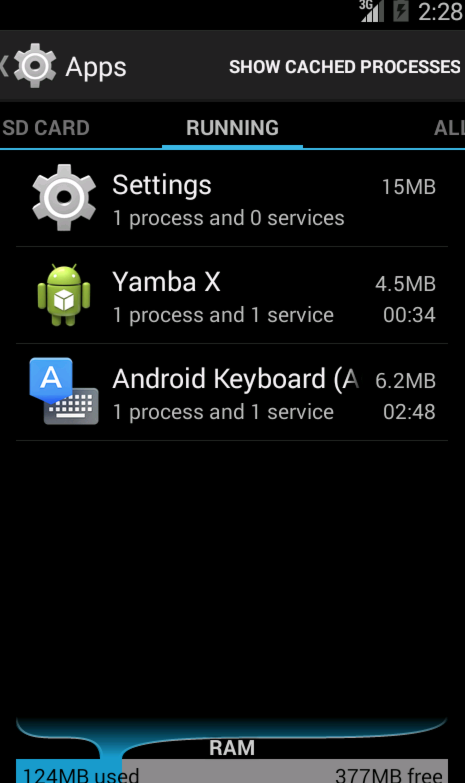

class BootReceiver extends BroadcastReceiver
{
override onReceive(Context context, Intent intent)
{
context.startService(new Intent(context, typeof(UpdaterService)))
}
}
<uses-permission android:name="android.permission.RECEIVE_BOOT_COMPLETED" />
<receiver android:name="com.marakana.yambax.BootReceiver">
<intent-filter>
<action android:name="android.intent.action.BOOT_COMPLETED" />
</intent-filter>
</receiver>
@Property boolean serviceRunning = true
val toggleService = [ | intent = new Intent(this, typeof(UpdaterService))
if (app.isServiceRunning)
stopService(intent)
else
startService(intent)
app.serviceRunning = !app.serviceRunning] as Command

<string name="send_timeline_notifications_permission_label">Sends Timeline Notifications</string>
<string name="send_timeline_notifications_permission_description">Allow this application to send timeline notifications to other applications</string>
<string name="receive_timeline_notifications_permission_label">Receive Timeline Notifications</string>
<string name="receive_timeline_notifications_permission_description">Allow this application to receive timeline notifications from other applications</string>
<uses-permission android:name="com.marakana.yamba.SEND_TIMELINE_NOTIFICATIONS" />
<uses-permission android:name="com.marakana.yamba.RECEIVE_TIMELINE_NOTIFICATIONS" />
<permission android:name="com.marakana.yamba.SEND_TIMELINE_NOTIFICATIONS"
android:label="@string/send_timeline_notifications_permission_label"
android:description="@string/send_timeline_notifications_permission_description"
android:permissionGroup="android.permission-group.PERSONAL_INFO"
android:protectionLevel="normal" />
<permission android:name="com.marakana.yamba.RECEIVE_TIMELINE_NOTIFICATIONS"
android:label="@string/receive_timeline_notifications_permission_label"
android:description="@string/receive_timeline_notifications_permission_description"
android:permissionGroup="android.permission-group.PERSONAL_INFO"
android:protectionLevel="normal" />
New static strings:
public static final String NEW_STATUS_INTENT = "com.marakana.yamba.NEW_STATUS"
public static final String SEND_TIMELINE_NOTIFICATIONS = "com.marakana.yamba.SEND_TIMELINE_NOTIFICATIONS";
public static final String RECEIVE_TIMELINE_NOTIFICATIONS = "com.marakana.yamba.RECEIVE_TIMELINE_NOTIFICATIONS"
override def void doBackgroundTask()
{
try
{
val List<Twitter.Status> timeline = twitter.getFriendsTimeline
newTweets = if (app.timeline.size == 0) timeline else timeline.filter [it.id > app.timeline.get(0).id]
Log.e("YAMBA", "number of new tweets= " + newTweets.size)
app.updateTimeline(newTweets)
sendBroadcast(new Intent(NEW_STATUS_INTENT), RECEIVE_TIMELINE_NOTIFICATIONS);
}
catch (TwitterException e)
{
Log.e("YAMBA", "Failed to connect to twitter service", e);
}
}
def updateTimeline(Iterable<Twitter.Status> newTweets)
{
newTweets.forEach[timeline.add(0, it)]
}
def clearTimeline()
{
timeline.clear
// todo - clear timeline view
}
}
class TimelineReceiver extends BroadcastReceiver
{
var TimelineActivity timelineActivity
new (TimelineActivity activity)
{
timelineActivity = activity;
}
override onReceive(Context context, Intent intent)
{
timelineActivity.timelineAdapter.notifyDataSetChanged
}
}
class TimelineActivity extends BaseActivity
{
@Property TimelineAdapter timelineAdapter
var TimelineReceiver receiver
var IntentFilter filter
override onCreate(Bundle savedInstanceState)
{
super.onCreate(savedInstanceState)
setContentView(R.layout.timeline)
timelineAdapter = new TimelineAdapter(this, R.layout.row, app.timeline)
receiver = new TimelineReceiver (this)
filter = new IntentFilter( UpdaterService.NEW_STATUS_INTENT )
}
override onStart()
{
super.onStart
val listTimeline = findViewById(R.id.listTimeline) as ListView
listTimeline.setAdapter(timelineAdapter);
}
override onResume()
{
super.onResume
super.registerReceiver(receiver, filter, UpdaterService.SEND_TIMELINE_NOTIFICATIONS, null);
}
override onPause()
{
super.onPause();
unregisterReceiver(receiver)
}
}
class NetworkReceiver extends BroadcastReceiver
{
override onReceive(Context context, Intent intent)
{
val isNetworkDown = intent.getBooleanExtra(ConnectivityManager.EXTRA_NO_CONNECTIVITY, false);
if (isNetworkDown)
{
if (YambaApplication.serviceRunning)
{
Log.d("YAMBA", "onReceive: NOT connected, stopping UpdaterService");
context.stopService(new Intent(context, typeof(UpdaterService)))
}
}
else
{
if (!YambaApplication.serviceRunning)
{
Log.d("YAMBA", "onReceive: connected, starting UpdaterService");
context.startService(new Intent(context, typeof(UpdaterService)))
}
}
}
}
public static boolean serviceRunning = false
val toggleService = [ | intent = new Intent(this, typeof(UpdaterService))
if (YambaApplication.serviceRunning)
stopService(intent)
else
startService(intent)
YambaApplication.serviceRunning = !YambaApplication.serviceRunning] as Command
override onMenuOpened(int featureId, Menu menu)
{
val toggleItem = menu.findItem(R.id.itemToggleService)
toggleItem.title = if (YambaApplication.serviceRunning) R.string.titleServiceStop else R.string.titleServiceStart
toggleItem.icon = if (YambaApplication.serviceRunning) android.R.drawable.ic_media_pause else android.R.drawable.ic_media_play
true
}
override onStartCommand(Intent intent, int flags, int startId)
{
super.onStartCommand(intent, flags, startId)
startBackgroundTask
YambaApplication.serviceRunning = true
START_STICKY;
}
override onDestroy()
{
super.onDestroy
stopBackgroundTask
YambaApplication.serviceRunning = false
}
<uses-permission android:name="android.permission.ACCESS_NETWORK_STATE" />
<receiver android:name="com.marakana.yambax.NetworkReceiver">
<intent-filter>
<action android:name="android.net.conn.CONNECTIVITY_CHANGE" />
</intent-filter>
</receiver>
def clearTimeline()
{
timeline.clear
sendBroadcast(new Intent(UpdaterService.NEW_STATUS_INTENT), UpdaterService.RECEIVE_TIMELINE_NOTIFICATIONS);
}